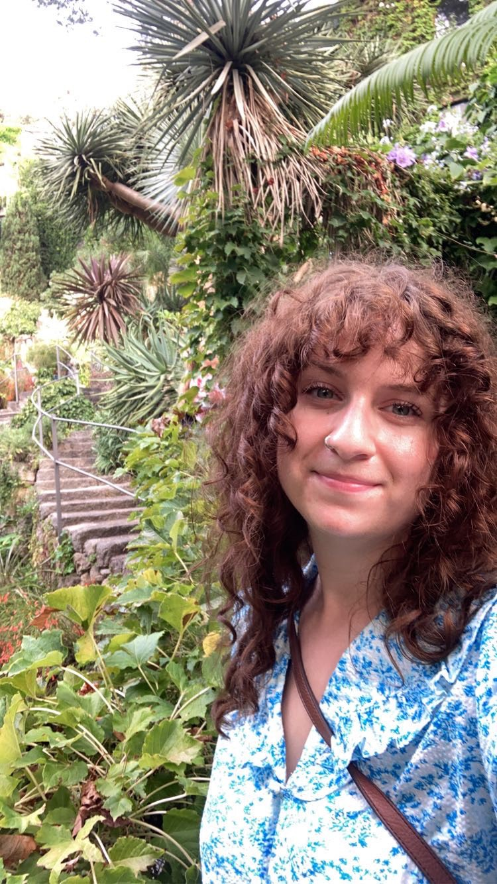
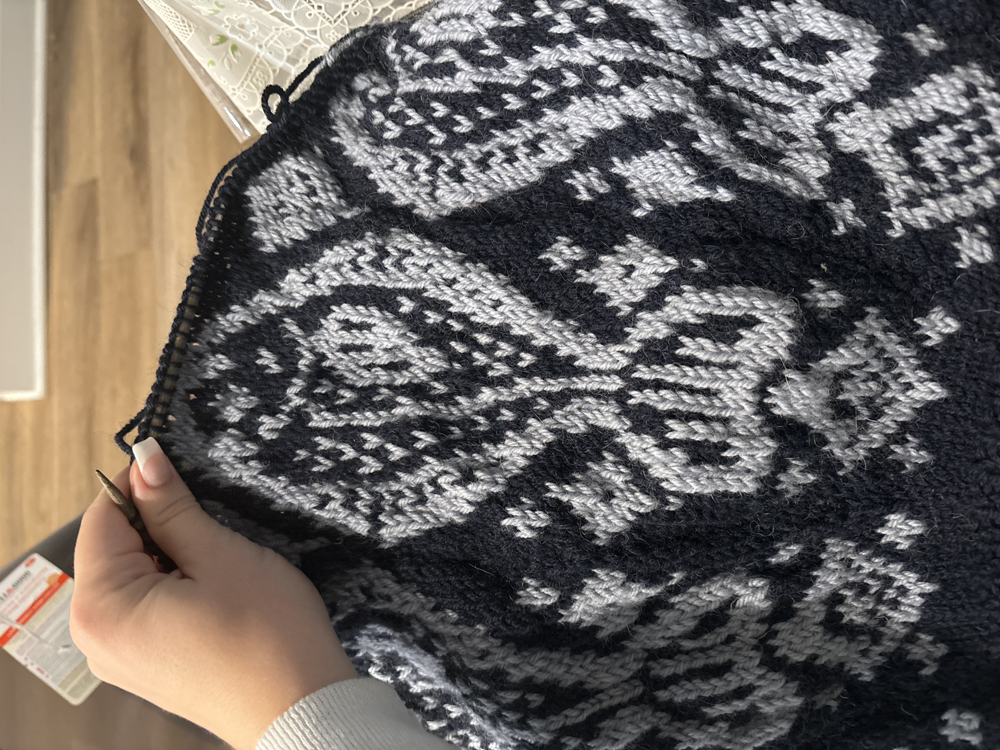
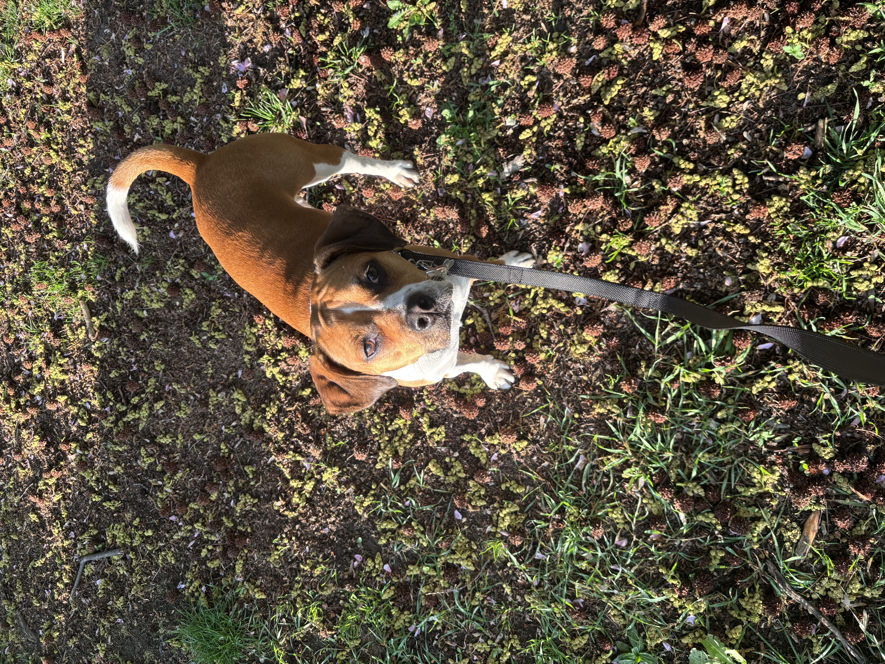

Hi, my name is Sonya Morud. I am currently pursing my Master's in Library and Information Science at Drexel University. For me, pursuing this masters is a way to transition out of the restaurant industry. I do love the restaurant industry, and currently work as a server at a popular restaurant here in Philadelphia. Outside of school and work, I enjoy knitting, hiking, going to the beach, and spending time wtih my family. My partner and I have a very sweet dog named Belka, and we recently purchased a home together and are spending time fixing it up before we move!

This photo was taken at Giardini la Mortella, a private garden on the island of Ischia off the coast of Naples, Italy.
I would like to develop my networking skills and am slowly the process of establishing a LinkedIn account, feel free to connect with me there!

Knitting is my main hobby. Primarily I make sweaters and socks, but I am currently dabbling in crochet with the attempt to make a beach bag that I can take to the Jersey Shore this summer.

Almost a year ago, my partner and I adopted a dog from a local shelter. She was about 10 months old when we adopted her, and we have no idea what her background is. But it's clear that she was not given the best start in life which manifests in her through axiety and reactivity. We have learned so much about dog training and making her feel secure. We have a ways a to go, but she is the sweetest dog!